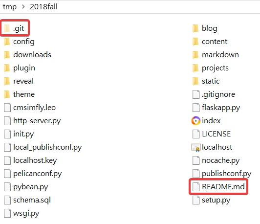

Week1
The university is like a restaurant. Every teacher teaches knowledge is nutrients. You need to learn more, strengthen the nutrition you need, keep learning, and learn how to do better.
大學就像餐廳，每個老師教的都是養分，要多方學習，加強吸收自己所需的營養，不斷的學習，並且學習如何做得更好吃
1. Under the github account, add a new repository, named: student number.github.io
在github帳號下，新增一個New repository，名為 : 學號.github.io
2. Clone your own new warehousing and the teacher’s warehousing
將自己新增的倉儲與老師的倉儲 clone 下來
3. Copy the teacher's data, except .git and README.me, all posted to their own folder
將老師的資料複製，除了 .git 和 README.me 全部貼入自己的資料夾

4. Bind the account and confirm with SciTE
綁定帳號及用 SciTE 確認是否正確

5. Use git status to see the current status of all files, then git add . > git commit -m "initial add " > git push to push the newly added file.
用 git status 查看所有檔案目前的狀況，之後再 git add . > git commit -m "initial add " >git push ，將剛剛新增的檔案推上去

6. Open python wsgi.py and go to the proximal to change the title name
開啟 python wsgi.py ，進入近端，更改標題名稱

7. Repeat git status> git add. > git commit -m "add name to title" > git push to complete
重複git status> git add。> git commit -m“在標題上添加名稱”> git push後完成

Learning Progress << Previous Next >> Teaching Video1